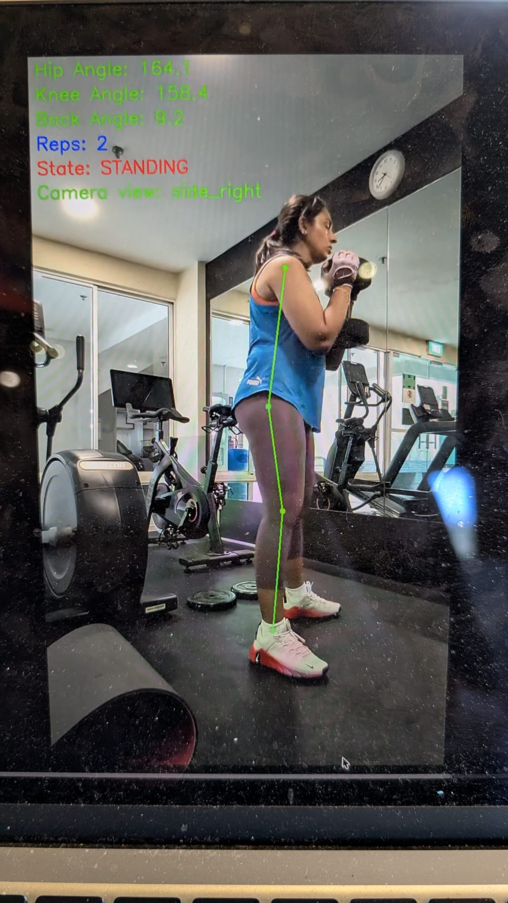

Kinetic — Pipeline Integration Guide
Squad ownership · Cross-squad handoffs · Steps 1–9 · For team review
Legend
Squad 1 — Frontend
Squad 2 — Backend
Squad 3 — Data
Quality Gate
DB Write
DB Read
Section 04 — Tech Architecture & Sequence
How the pipeline runs
Every step from video upload to results on screen — squad ownership and data flow
User uploads video
POST /upload · video file + exercise_id + weight_value + weight_unit
upload_received
Upload screen
Exercise
Goblet Squat ▾
Weight
12 kg
Video file
squat_session.mp4
Upload →
Save to GCS + write DB record
Generates analysis_id · saves video to GCS · returns {analysis_id} to frontend immediately
mediapipe_started (+ video_url)
DB write · form_analyses
analysis_id550e…4000
exercise_idex_gob_squat_001
weight_value12.0
video_urlgs://…mp4
statusprocessing
MediaPipe — joint keypoint extraction
Reads raw video frame-by-frame · outputs per-frame landmarks + per-rep segments including bottom_frame and bottom_timestamp_ms
mediapipe_complete
Landmark output · per frame
left_hipvis: 0.94
left_kneevis: 0.91
left_anklevis: 0.88
rep_count8
bottom_frame342
bottom_ms5700
Visibility quality gate
Checks landmark confidence across frames · FAIL → error SSE + pipeline stops · PASS → continues to Step 5
Two outcomes
✓ PASS
Good angle · joints detected · pipeline continues
✗ FAIL
Quality gate error (e.g. occlusion_left_side) · SSE error fired · user asked to re-film
OpenCV Part 1 — 8-frame composite grid
Extracts 8 evenly-spaced frames · draws skeleton lines · arranges in 4×2 grid · saves composite JPEG to GCS · sent to Haiku as visual input, NOT shown to user
frames_extracted — Step 5 completes internally, no SSE event
Output — overlay video

Full video · green skeleton lines · every frame
Biomechanics script — angles, tempo, stability
Converts landmarks → knee/hip/ankle angles · tempo · stability · back angle · bottom_frame + bottom_timestamp_ms per rep
biomechanics_complete
Output · per rep
rep_number3
knee_angle88.2°
hip_angle86.5°
dorsiflexion22.1°
tempo1.37s
bottom_ms5700
Claude Haiku 4.5 — Call 1 · form analysis + coaching
IN: 8-frame composite + biomechanics JSON + weight + gold standard + last 3 sessions + .md coaching files · OUT: scores (overall + 4 params + per-rep) + full coaching JSON · Tab 1 unlocks
haiku_started → analysis_ready (Tab 1 unlocked)
Haiku Call 1 output
overall_score72
posture74
stability61
movement78
range_of_motion68
rep scores82·79·68·74·71…
OpenCV Part 2 — worst-rep frame extraction (runs after Haiku)
Finds lowest-scoring rep from Haiku rep_scores[] · looks up bottom_timestamp_ms from biomechanics JSON · extracts frame · annotates with angles + gold standard · saves JPEG · shown to user
frame_ready (+ annotated_frame_url) — image loads in Tab 1 ~2–3s after coaching text
Annotated frame · worst rep
User at bottom of squat
Hip 86° / 80–95°
Knee 88° / 80–95°
Ankle 22° / ≥25°
This image appears on Results screen
Claude Haiku 4.5 — Call 2 · longitudinal coaching · async
Runs async after Call 1 is saved to DB · IN: current scores + last 5 sessions' scores + Haiku outputs from form_analysis_results · OUT: today vs previous comparison + 5-session trend insights + weight decision · Tab 2 unlocks
No .md files in Call 2. Focused prompt — longitudinal comparison only. Rep-by-rep graph + 5-session graph rendered by frontend from DB data, not produced by Haiku.
progression_ready → Tab 2 unlocks
Haiku Call 2 output
vs previous+7
posture Δ+5
stability Δ+2
HOLD WEIGHT AT 12KG
Ankle mobility still limiting
Squad ownership
Squad 1 — Frontend
React · Tailwind · SSE client
Squad 2 — Backend
FastAPI · GCS · Claude Haiku 4.5
Squad 3 — Data
MediaPipe · OpenCV · Biomechanics
Quality Gate
Blocks bad videos before AI
SSE events
Real-time progress pushed to the frontend at every stage. Frontend never polls — server pushes.
Data layer
↑ DB Write
↓ DB Read
📄 RAG / Prompt
DB tables used
form_analyses
form_analysis_results
exercises
gold_standard_biomechanics
form_analysis_results
exercises
gold_standard_biomechanics
Step 1
Squad 1
User uploads video
Squad 1 — Frontend · Upload screen
IN
User selects exercise (Goblet Squat), enters weight in kg, picks video file (.mp4 / .mov)
OUT
Multipart POST to
/upload with video file + exercise identifier + weightSSE
Opens
EventSource on /analysis/{analysis_id}/stream after receiving analysis_id from Step 2What Squad 1 needs from Squad 2 before building
Exact URL for the
/upload endpoint (Cloud Run dev URL)Multipart field names — confirmed in technical_data_schema.html:
video (file) · exercise_id (string: "ex_gob_squat_001") · weight_value (float) · weight_unit (string: "kg" | "lb")Confirmed response shape — Squad 1 expects
{"analysis_id": "uuid"} before opening the SSE streamSSE stream URL pattern — confirmed as
/analysis/{analysis_id}/stream↓
Handoff A
Squad 1 → Squad 2 · Field names confirmed — from technical_data_schema.html
Squad 1 POSTs the video to Squad 2's endpoint. Field names are already defined in technical_data_schema.html — confirmed below. Remaining item for integration meeting: error response shape.
# What Squad 1 sends — field names confirmed from technical_data_schema.html
formData = FormData()
formData.append("video", videoFile) # multipart file field
formData.append("exercise_id", "ex_gob_squat_001") # FK → exercises reference table
formData.append("weight_value", "12.0") # float
formData.append("weight_unit", "kg") # "kg" | "lb"
# What Squad 2 returns — Squad 1 opens SSE stream immediately after
{ "analysis_id": "550e8400-e29b-41d4-a716-446655440000" }
formData = FormData()
formData.append("video", videoFile) # multipart file field
formData.append("exercise_id", "ex_gob_squat_001") # FK → exercises reference table
formData.append("weight_value", "12.0") # float
formData.append("weight_unit", "kg") # "kg" | "lb"
# What Squad 2 returns — Squad 1 opens SSE stream immediately after
{ "analysis_id": "550e8400-e29b-41d4-a716-446655440000" }
One remaining item for integration meeting
→ Error response shape — what does Squad 1 receive if the upload fails (413 file too large, 400 bad request, 500 server error)? Squad 1 needs to know the shape to render the correct error state.
↓
Step 2
Squad 2
Save to GCS + write DB record
Squad 2 — Backend · /upload endpoint
IN
video file · exercise_id · weight_value · weight_unit · user_id · session_id — from Squad 1's POST body
OUT
Generates
analysis_id (uuid4). Saves video to GCS at videos/{user_id}/{analysis_id}/original.mp4. Returns {"analysis_id": "..."} to frontend immediately.DB
Writes
form_analyses record: analysis_id · session_id · user_id (from POST body — auth de-scoped) · exercise_id · weight_value · weight_unit · weight_kg_normalised (computed) · video_url · status: "uploaded" · created_atSSE
upload_received → { analysis_id, session_id, user_id, filename, size_mb, created_at }What Squad 2 does immediately after GCS save completes
Emits
mediapipe_started SSE event → { analysis_id, session_id, user_id, video_url }Calls Squad 3's pipeline function — passing
gcs_path and analysis_idThis call is async / background — the
/upload response has already been sent to Squad 1 before this runsAuth de-scoped — user identity approach confirmed
user_id is generated by Squad 1 (frontend) via crypto.randomUUID() on first visit, stored in localStorage, and sent in the POST body. session_id is generated at app mount, stored in sessionStorage, and also sent in the POST body. No hardcoded IDs — each device gets its own persistent ID. Squad 2 reads both from the request body (no JWT). See FE_Response_Schemas.md Section 0.↓
Handoff B
Squad 2 → Squad 3 · Open — function contract must be agreed
Squad 2 triggers Squad 3's full processing pipeline (Steps 3–6) as a background async task. Squad 3 exposes their pipeline as a callable Python function. The exact inputs, outputs, and error signals must be agreed before either squad writes integration code.
The agreed function contract — to be confirmed in meeting
# Squad 3 exposes this function — Squad 2 calls it
def process_video(
gcs_path: str, # full GCS path to raw video
analysis_id: str # uuid — used for naming output files in GCS
) -> dict:
# Runs Steps 3, 4, 5, 6 internally
# On success returns:
return {
"status": "success",
"composite_grid_b64": "<base64_string>", # Step 5 output — in memory only, no GCS
"biomechanics_json": { ... }, # Step 6 output — stored in DB
}
# On quality gate failure returns:
return {
"status": "failed",
"error_stage": "quality_gate",
"error_code": "occlusion_left_side", # see full code list in FE_SSE_and_Errors.md quality gate taxonomy
"landmark_medians": { ... } # required for occlusion_* and out_of_frame_* codes — median_visibility + median_presence per joint
}
def process_video(
gcs_path: str, # full GCS path to raw video
analysis_id: str # uuid — used for naming output files in GCS
) -> dict:
# Runs Steps 3, 4, 5, 6 internally
# On success returns:
return {
"status": "success",
"composite_grid_b64": "<base64_string>", # Step 5 output — in memory only, no GCS
"biomechanics_json": { ... }, # Step 6 output — stored in DB
}
# On quality gate failure returns:
return {
"status": "failed",
"error_stage": "quality_gate",
"error_code": "occlusion_left_side", # see full code list in FE_SSE_and_Errors.md quality gate taxonomy
"landmark_medians": { ... } # required for occlusion_* and out_of_frame_* codes — median_visibility + median_presence per joint
}
What Squad 2 does with the return value
On success: stores biomechanics_json to DB · emits biomechanics_complete SSE · calls Haiku Call 1 with composite_grid_b64 (base64) + biomechanics_json
On failure: updates
form_analyses status to "failed" · emits full error SSE event: { analysis_id, session_id, user_id, error_code, error_stage, retryable, message } — see FE_SSE_and_Errors.md for required shape and retryable values per error_codeSSE events during Steps 3–6 — developer recommendation needed Ask Nicole + Anusha/Ezequiel
Squad 2 owns the SSE stream. Squad 3 runs the pipeline. The question is how Squad 3 signals progress back to Squad 2 so intermediate SSE events can fire. Below are three options from simplest to most robust — ask the developer which they recommend and why before deciding.
Note for developer meeting: Present all three options. Ask Nicole (S2) and Anusha/Ezequiel (S3) which they can implement fastest given current progress. For a demo, Option C is acceptable. For a product, Option A is the right long-term architecture.
↓
Step 3
Squad 3
MediaPipe — joint keypoint extraction
Squad 3 — Data / Full Stack · Internal to process_video()
IN
gcs_path — raw video downloaded from GCS. OpenCV wrapper reads frame-by-frame.OUT
Per-frame landmarks (x, y, z normalised, visibility, presence) for all 10 SQUAT_LANDMARKS · per-rep segments (start_frame, bottom_frame, end_frame, bottom_timestamp_ms) · FPS + total frame count
SSE
mediapipe_complete → { analysis_id, session_id, user_id, rep_count, fps, keypoints_detected, frames_processed }Data gap — developer not yet aware · review in meeting
MediaPipe computes
Action for meeting: Walk the Squad 3 developer through the OpenCV frame extraction brief (opencv_frame_extraction_brief.html) — specifically Section 3 (data gap) and Section 4 (proposed fix). They need to add two fields to their biomechanics script output before building Step 6. Confirm they understand and agree with the fix before they write the script.
bottom_frame and bottom_timestamp_ms for every rep during segmentation. These must be passed through to the biomechanics script output (Step 6) so they are saved to DB. Without them, OpenCV Step 2 (Step 8) cannot seek to the correct frame in the video.Action for meeting: Walk the Squad 3 developer through the OpenCV frame extraction brief (opencv_frame_extraction_brief.html) — specifically Section 3 (data gap) and Section 4 (proposed fix). They need to add two fields to their biomechanics script output before building Step 6. Confirm they understand and agree with the fix before they write the script.
↓
Step 4
Squad 3
Visibility quality gate
Squad 3 — Data / Full Stack · Runs immediately after Step 3
IN
Per-frame landmark visibility + presence scores from Step 3
OUT — pass
Pipeline continues to Step 5. All critical landmarks visible across ≥70% of frames.
OUT — fail
Returns error dict to Squad 2 with
error_code, error_stage: "quality_gate", and landmark_medians (for occlusion/out_of_frame codes). Pipeline stops. Squad 2 emits full SSE error event and updates form_analyses status to "failed".Error codes Squad 3 must produce — passed through to SSE error event by Squad 2. Full taxonomy in
FE_SSE_and_Errors.md.occlusion_left_side — (M1) ≥1 critical joint on left side visibility ≤ 0.60occlusion_right_side — (M1) ≥1 critical joint on right side visibility ≤ 0.60occlusion_both_sides — (M2) ≥1 critical joint visibility ≤ 0.60 on both sidesout_of_frame_left — (M3) visibility passes but left side median_presence ≤ 0.50out_of_frame_right — (M3) visibility passes but right side median_presence ≤ 0.50poor_video_quality — (M4) composite video_score < 0.70 — bad angle, obstruction, low lightingno_reps_detected — (M5) complete_reps = 0insufficient_reps — (M6) 0 < complete_reps < 3↓
Step 5 · OpenCV Part 1
Squad 3
OpenCV — 8-frame composite grid extraction
Squad 3 — Data / Full Stack · Runs only if quality gate passes
IN
Raw video frames · MediaPipe landmark coordinates per frame from Step 3
OUT
8-frame composite JPEG — returned as base64 bytes in memory. Not saved to GCS — transient input to Haiku only, never read again after Step 7.
What Squad 2 receives from this step
composite_grid_b64 — base64-encoded JPEG string (~200–400KB). Squad 2 passes this directly into the Haiku API call (Step 7) as an image content block. No GCS upload, no URL.Not shown to the user. No SSE event emitted for this step — it completes internally within
process_video() before returning to Squad 2.↓
Step 6
Squad 3
Biomechanics script — angles, tempo, stability
Squad 3 — Data / Full Stack · Final step in process_video()
IN
MediaPipe landmarks + rep segments from Step 3 · FPS from OpenCV wrapper
OUT
Biomechanics JSON — per-rep: knee/hip/ankle angles, tempo, stability, back angle, depth classification. Session-level: consolidated metrics. Must also include bottom_frame + bottom_timestamp_ms per rep.
SSE
biomechanics_complete → { analysis_id, session_id, user_id, rep_count, joints_computed, avg_confidence }🆕 Schema changes required — 2 new fields per rep + 1 new field in consolidated
These fields must be added to the biomechanics script output. Without
bottom_frame and bottom_timestamp_ms, OpenCV Part 2 cannot seek the correct frame. Without session_valgus_fault, valgus detection stays inside the LLM prompt.
# Per-rep object — new fields highlighted
{
"rep_number": 3,
"bottom_frame": 342, # 🆕 NEW — frame index at squat bottom position
"bottom_timestamp_ms": 5700.0, # 🆕 NEW — (bottom_frame / fps) × 1000. OpenCV Part 2 seeks here.
"depth_data": { "knee_angle_at_bottom": 88.2, ... },
... (existing fields unchanged)
}
# Consolidated section — new field in stability object
{
"stability": {
"session_valgus_fault": true, # 🆕 NEW — true if ≥50% valid reps have knee_valgus_distance < 0.22
... (existing fields unchanged)
}
}
{
"rep_number": 3,
"bottom_frame": 342, # 🆕 NEW — frame index at squat bottom position
"bottom_timestamp_ms": 5700.0, # 🆕 NEW — (bottom_frame / fps) × 1000. OpenCV Part 2 seeks here.
"depth_data": { "knee_angle_at_bottom": 88.2, ... },
... (existing fields unchanged)
}
# Consolidated section — new field in stability object
{
"stability": {
"session_valgus_fault": true, # 🆕 NEW — true if ≥50% valid reps have knee_valgus_distance < 0.22
... (existing fields unchanged)
}
}
What Squad 2 receives from process_video() — the full return dict
composite_grid_b64 — base64 JPEG bytes · passed directly into Haiku API call (Step 7) · not saved to GCSbiomechanics_json — stored to DB in form_analysis_results. Step 8 looks up bottom_timestamp_ms for the rep Haiku identifies as worst.Note: worst_rep_number is NOT computed here. Haiku Call 1 outputs
rep_scores[] — Step 8 finds the lowest-scoring rep from that array, then looks up its bottom_timestamp_ms from this JSON.↓
Handoff C
Squad 3 → Squad 2 · Pattern agreed — function returns dict
Squad 3's
process_video() returns its result dict to Squad 2. Squad 2 then: (1) stores biomechanics_json to DB, (2) emits biomechanics_complete SSE, (3) calls Haiku Call 1 with composite_grid_b64 (base64) + biomechanics_json. OpenCV Part 2 runs after Haiku — it needs Haiku's per-rep scores to identify the worst rep.
# Squad 2 — after process_video() returns
result = await process_video(gcs_path, analysis_id)
if result["status"] == "failed":
db.update_form_analyses(analysis_id, status="failed")
sse.emit("error", { analysis_id, error_code: result["error_code"], retryable: "false" })
return
# Store biomechanics JSON to DB
db.store_biomechanics(analysis_id, result["biomechanics_json"])
sse.emit("biomechanics_complete", { analysis_id, rep_count: ... })
# Step 7 — call Haiku with composite grid + biomechanics JSON
haiku_input = {
"composite_grid_b64": result["composite_grid_b64"], # base64 bytes — no GCS URL
"biomechanics_json": result["biomechanics_json"],
# + weight, exercise from form_analyses, gold standard, last 3 sessions, .md files
}
result = await process_video(gcs_path, analysis_id)
if result["status"] == "failed":
db.update_form_analyses(analysis_id, status="failed")
sse.emit("error", { analysis_id, error_code: result["error_code"], retryable: "false" })
return
# Store biomechanics JSON to DB
db.store_biomechanics(analysis_id, result["biomechanics_json"])
sse.emit("biomechanics_complete", { analysis_id, rep_count: ... })
# Step 7 — call Haiku with composite grid + biomechanics JSON
haiku_input = {
"composite_grid_b64": result["composite_grid_b64"], # base64 bytes — no GCS URL
"biomechanics_json": result["biomechanics_json"],
# + weight, exercise from form_analyses, gold standard, last 3 sessions, .md files
}
↓
Step 7
Squad 2
Claude Haiku 4.5 — form analysis + coaching (Call 1)
Squad 2 — Backend · Anthropic API · Current session only
IN
composite_grid_b64 (base64 JPEG from Step 5 — in memory, no GCS URL) ·
biomechanics_json (from Step 6) ·
form_analyses fields: user_id, analysis_id, weight_value, weight_unit, exercise_id, exercise_name ·
gold standard JSON (from Supabase) ·
last 3 sessions (weight + MediaPipe JSON + past Haiku output, from form_analysis_results) ·
coaching .md files (injected into prompt)
OUT
Structured JSON — two sections in one call:
Analysis: faults_detected · confidence · fault_detail (rep count, which reps, severity, trend) · causal_chain · trends
Coaching: overall_score · 🆕 NEW posture_score · 🆕 NEW stability_score · 🆕 NEW movement_quality_score · 🆕 NEW range_of_motion_score · 🆕 NEW rep_scores[] (per-rep score array) · verdict · positive_observations · critical_observations · recommendation · rep_trend
Analysis: faults_detected · confidence · fault_detail (rep count, which reps, severity, trend) · causal_chain · trends
Coaching: overall_score · 🆕 NEW posture_score · 🆕 NEW stability_score · 🆕 NEW movement_quality_score · 🆕 NEW range_of_motion_score · 🆕 NEW rep_scores[] (per-rep score array) · verdict · positive_observations · critical_observations · recommendation · rep_trend
DB
Stores to
overall_score · coaching_output (full JSON) — existing columns
🆕 NEW COLUMNS posture_score · stability_score · movement_quality_score · range_of_motion_score · rep_scores (JSON array)
Status → "analysis_complete"
form_analysis_results:overall_score · coaching_output (full JSON) — existing columns
🆕 NEW COLUMNS posture_score · stability_score · movement_quality_score · range_of_motion_score · rep_scores (JSON array)
Status → "analysis_complete"
SSE
haiku_started → { analysis_id, session_id, user_id } · analysis_ready → { analysis_id, session_id, user_id, overall_score } — Tab 1 unlocks, user reads coaching while frame loadsTab 1 scope — current session only
This call is about THIS video only — verdict, score, observations, coaching
No weight decision, no progression comparison — those are Tab 2 (Haiku Call 2, async)
Per-rep scores from this output are stored to DB — used by Tab 2 and by OpenCV Part 2 (Step 8) to identify the worst rep
Model ID:
claude-haiku-4-5-20251001 via Anthropic SDK↓
Step 8 · OpenCV Part 2
Squad 3
NEW
OpenCV — worst-rep frame extraction + angle annotation
Squad 3 — Data / Full Stack · Runs after Haiku Call 1 completes
IN
raw_video_url (from GCS) ·
rep_scores[] from Haiku Call 1 output (to identify worst rep) ·
bottom_timestamp_ms for that rep (looked up from biomechanics JSON in DB) ·
worst_rep_data — angle values for that rep from biomechanics JSON ·
gold standard angles (from Supabase gold standard table)
OUT
Static annotated JPEG — worst-rep bottom frame with: skeleton lines + joint markers (colour-coded by status) + user's actual angle values + gold standard comparison. Saved to GCS at
analyses/{analysis_id}/worst_rep_frame.jpg.DB
Updates
form_analysis_results: annotated_frame_url set to GCS image path.SSE
frame_ready → { analysis_id, session_id, user_id, annotated_frame_url } — frontend swaps image placeholder in Tab 1Worst rep identification — from Haiku, not biomechanics script
Haiku Call 1 outputs
rep_scores[] — per-rep scores across all 4 parametersSquad 2 finds the rep with the lowest overall score from this array → that is
worst_rep_numberSquad 2 then looks up
bottom_timestamp_ms for that rep number from the biomechanics JSON stored in DB (Step 6)Calls:
extract_worst_rep_frame(raw_video_url, bottom_timestamp_ms, worst_rep_data, gold_standard_angles)Annotation spec — static image, first cut
Skeleton lines (hip→knee, knee→ankle) drawn using
cv2.lineJoint markers at knee, hip, ankle — colour by status: green (in range), amber (borderline), red (outside range)
Actual angle values as text labels — e.g. "Knee: 88°" —
cv2.putText with semi-transparent backgroundGold standard comparison alongside — e.g. "Ideal: 80–95°" in green · values from Supabase gold standard table
Expected render time: 2–3s after Haiku completes · user is already reading coaching text in Tab 1
↓
Step 9
Squad 2
Claude Haiku 4.5 — longitudinal coaching (Call 2) · async
Squad 2 — Backend · Runs async after Step 7 output is saved · Tab 2 only
IN
From
form_analyses: current analysis_id, exercise_id, user_id, weight_value ·
From form_analysis_results (current session): overall_score, posture_score, stability_score, movement_quality_score, range_of_motion_score, rep_scores[], full Haiku Call 1 coaching output ·
From form_analysis_results (last 5 sessions for same exercise_id): weight + all scores + Haiku coaching output per session
OUT
Structured JSON — two sections:
Section 1 (today vs previous): date + weight both sessions · overall score + variance · 1-line verdict · 4× parameter variance + 1-sentence verdict each · weight decision (hold / good to progress / drop weight)
Section 2 (progression timeline): 3-point insight summary on trend across last 5 sessions
Section 1 (today vs previous): date + weight both sessions · overall score + variance · 1-line verdict · 4× parameter variance + 1-sentence verdict each · weight decision (hold / good to progress / drop weight)
Section 2 (progression timeline): 3-point insight summary on trend across last 5 sessions
DB
Stores to
form_analysis_results: 🆕 NEW COLUMN progression_output (JSON) · status → "complete"SSE
progression_ready → { analysis_id, session_id, user_id } — Tab 2 unlocks · frontend calls GET /analysis/{analysis_id}/progression to fetch Section 1 + Section 2 JSONWhat Tab 2 shows and where the data comes from
Section 1 — today vs previous: score variances + per-parameter verdicts + weight decision → from Haiku Call 2 output
Section 1 — rep-by-rep graph: both sessions'
rep_scores[] pulled directly from DB · frontend renders chart · not produced by HaikuSection 2 — progression graph: last 5 sessions' scores + weights pulled from DB · frontend renders chart · not produced by Haiku
Section 2 — 3-point insight summary: from Haiku Call 2 output
No .md files in this call — focused prompt on longitudinal comparison only
What Squad 1 receives at analysis_ready (Tab 1) — via GET /analysis/{id}/result
overall_score · posture_score · stability_score · movement_quality_score · range_of_motion_score
verdict · positive_observations · critical_observations · recommendation · rep_trend
annotated_frame_url — arrives separately via frame_ready SSE (2–3s after analysis_ready)Schema defined in
FE_Response_Schemas.md — confirm shape before wiringSection 1 — Full pipeline sequence
Where everything fits end to end
Read this top to bottom. Each step shows what goes in, what comes out, and which squad owns it. The two OpenCV steps are highlighted — Step 1 (video overlay) is existing work; Step 2 (frame extraction) is what this brief is about.
OUT
POST /upload · video file + exercise_id + weight_value + weight_unit + user_id + session_id
SSE
upload_received → { analysis_id, session_id, user_id, filename, size_mb, created_at }
IN
video file · exercise_id · weight_value · weight_unit · user_id · session_id
OUT
video_url = gs://kinetic-videos/videos/{user_id}/{analysis_id}/original.mp4
DB
form_analyses: analysis_id, user_id, session_id, exercise_id, weight_value, weight_unit, weight_kg_normalised, video_url, status: uploaded
SSE
mediapipe_started → { analysis_id, session_id, user_id, video_url }
IN
video_url (raw video from GCS)
OUT
per-frame landmarks (x, y, z, visibility, presence) · per-rep segments (start_frame, bottom_frame, end_frame, timestamps)
⚠ bottom_frame and bottom_timestamp_ms computed here — see Section 3 for the gap
SSE
mediapipe_complete → { analysis_id, session_id, user_id, rep_count, fps, keypoints_detected, frames_processed }
IN
per-frame landmark visibility + presence scores
FAIL
error SSE fired · pipeline stops · form_analyses status → failed
PASS
pipeline continues to Step 5
IN
raw video (from GCS) · MediaPipe landmarks per frame
OUT
composite_grid_b64 — 8-frame 4×2 composite JPEG as base64 bytes · in memory only · not saved to GCS
Passed directly into Haiku API call — no GCS upload, no SSE event
IN
MediaPipe landmarks · rep segments
OUT
biomechanics JSON — knee/hip/ankle angles · tempo · stability · per-rep data · bottom_frame + bottom_timestamp_ms per rep (proposed addition)
DB
form_analysis_results: biomechanics JSON stored
SSE
biomechanics_complete → { analysis_id, session_id, user_id, rep_count, joints_computed, avg_confidence }
IN
composite_grid_b64 (base64, in memory) · biomechanics JSON · weight + exercise from form_analyses · gold standard JSON · last 3 sessions · .md coaching files
OUT
overall_score · posture/stability/movement/range_of_motion scores · rep_scores[] · faults · coaching JSON · Tab 1 unlocks
SSE
haiku_started · analysis_ready → { analysis_id, session_id, user_id, overall_score }
IN
raw video (from GCS) · rep_scores[] from Haiku to identify worst rep · bottom_timestamp_ms for that rep (from biomechanics JSON in DB) · gold standard angles
OUT
static annotated JPEG — worst-rep bottom frame with skeleton + user angles + gold standard comparison · saved to GCS
DB
form_analysis_results: annotated_frame_url updated
SSE
frame_ready → { analysis_id, session_id, user_id, annotated_frame_url } — loads ~2–3s after coaching text in Tab 1
Runs after Haiku Call 1 completes · this image IS shown to the user in Tab 1
IN
current scores + coaching output · last 5 sessions' scores + Haiku outputs (from form_analysis_results) · no .md files
OUT
today vs previous comparison (score variances + verdicts + weight decision) · 5-session trend summary · Tab 2 unlocks
SSE
progression_ready → { analysis_id, session_id, user_id } — Tab 2 unlocks